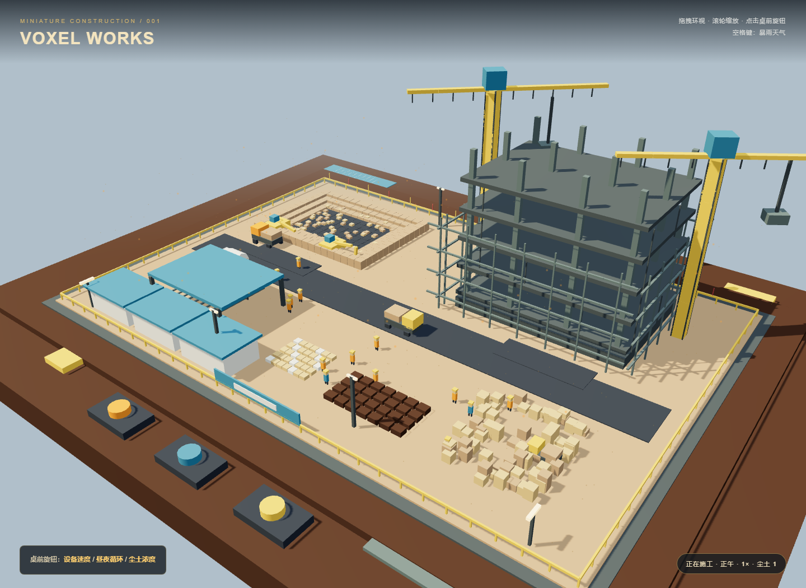

体素微缩建筑工地
原始提示词
见 完整原始输入。本轮使用 v1 任务正文。
运行与复盘
直接在 Chrome 打开 index.html。index.html 是完整离线产物，已内联 Three.js r160；源码为 scene.js，运行 npm ci && npm run build 可重新生成。拖拽环视、滚轮缩放；点击桌前从左到右的旋钮调整速度、昼夜循环、尘土，空格切换暴雨。60FPS 与完全无穿模尚未在目标设备实测，不作性能保证。
模型名称和档位由用户指定为 gpt-6-sol / medium；工具是当前 Codex 会话。运行环境未提供可独立核验的模型标识。
预览截图

<!-- archive:start -->
当前归档信息（自动生成）
- 实验 ID：
voxel-construction-site--gpt-6-sol-medium-r01 - 模型：GPT-6 Sol；推理档位：medium
- 类型：single-html；预览：static；网络：offline
- 完整原始输入快照 · 主题与其他版本
- 输入记录：本轮按存档任务正文原文执行。 本轮由用户统一指定全部主题、模型名 gpt-6-sol、medium 档位及当前会话执行。
- 工具：Codex 当前会话。用户指定模型名称 gpt-6-sol、档位 medium；运行环境未提供可独立核验的模型标识。未委派子代理。
- 运行方式：浏览器直接打开本目录入口；CDN/外部素材需要联网。
- 费用记录：OpenAI · ChatGPT Plus 订阅；单案例货币金额未记录。据用户说明，OpenAI 模型通过 ChatGPT Plus 订阅测试；全部案例完成后，五小时额度未耗尽。未提供单案例费用金额。
- 预览
部署适配记录
- 首次生成，无人工修改历史产物。
- 原文同时要求 Three.js r160 CDN 和不引用任何外部资源；最终 HTML 内联打包 Three.js r160，优先满足无外部资源。 <!-- archive:end -->